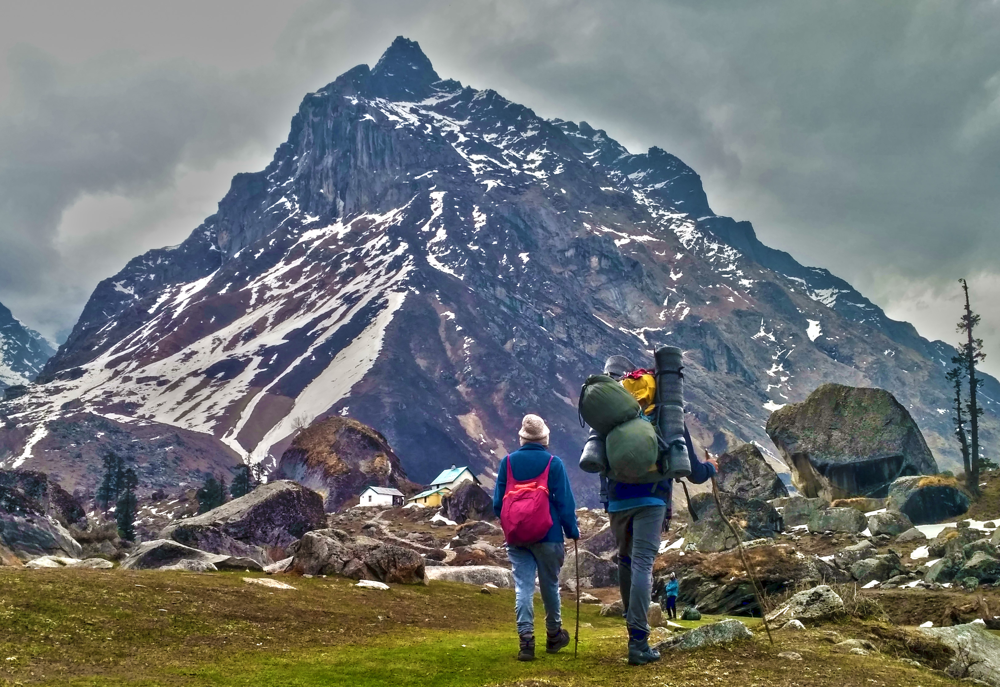
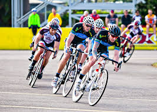
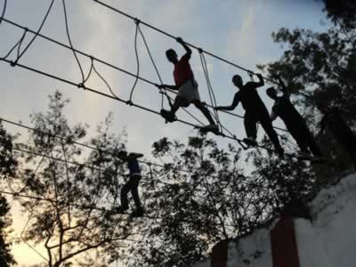

Trekking
Trekking
Trekking is an exploratory activity which involves walking in areas where unpredictability is the norm. Getting away from the dangers of modern society and entering a world where people watch out for each other and maintain vigilance for the well being of their neighbors. Making it simpler, trekking often refers to multi-day hiking trips through rural, often rugged territory. It is usually incorporated with a no. of other outdoor sports such as rock climbing .Here at HEC it has multiple meanings, considering it as an opportunity to mingle with the seniors & juniors and also as a way of getting familiar with the Himalayan ranges. It also acts as a way to get away through the stressful lives. It is undertaken with the specific purpose of exploring and enjoying the scenery. It usually takes place on trails in areas of relatively unspoiled wilderness.
Rock Climbing
Rock Climbing
Rock-climbing is an activity that is high on adventure on thrill. The bare rock walls, dizzying heights, and the sheer enormity of the landscape are what probably make rock-climbing so adventurous. Climbing the bare mountain slopes and reaching the summit or endpoint often gives one the triumphant feeling of having conquered the peak, and this is what gives many rock climbers a thrill! Rock-climbing is a physically and mentally demanding sport that tests a climbers strength, agility, endurance and balance along with his mental control. Besides, it gives one the opportunity to explore terrains that cannot be accessed otherwise, and often the final peak offers a magnificient view of valleys, rivers of even the ocean below. In recent times, several artificial climbing walls have also been developed. These are designed to look like a real mountain, and are a good place for beginners to learn, practice and feel the thrill, while still being safe of the dangers they might be exposed to in a real terrain. Rock-climbing is fun, especially when done in groups; members of a group help each other, and it often develops strong bonds. It is an exciting, exhilarating and adventurous activity that must be tried at least once.

Rafting
Rafting
If you have ever seen a rapid river, looking more white than the conventional blue, as it manoeuvres the stones and rocks beneath, i am sure you've felt a certain unexplainable thrill. It is a scenic view and one may be awed by its beauty, but more than that, the fast, torrential waters seem to be an adventurous invitation, to feel that speed, and the thrill accompanies it. An activity that lets you do all this is rafting or white-water rafting. Rafting involves using an inflatable raft to navigate rivers, which may be of different degrees of roughness. Rafting waters are graded according to an international scale of river difficulty, depending on the size of waves, the presence of rocks, measure of roughness of the waters and the possibility of drops in the region, and higher levels require certain skills. Rafting is sometimes considered to be a dangerous sport, and probably that is what makes it more exciting. However if done under the guidance of experts, with proper safety precautions and in a responsible manner it is quite safe. HEC organizes rafting expeditions every year in rivers flowing in the region. It is truly an exciting activity and a must-try for everyone! This is organized around March - April every year.
Paragliding

Paragliding
From the earliest days man has been amazed and awed by the birds' flight and has wished for himself to soar high in the sky like a bird. Many men have spent several laborious hours trying to make this dream come true. And the Wright brothers were indeed successful in developing an aeroplane, a machine that would let humans travel in air, yet it was far apart from flying like a bird, feeling the wind against you while enjoying the panoramic view below. This is exactly what paragliding lets you do and what makes it all the more exciting! Paragliding is a recreational and competitive flying sport, and most paragliding regions have a number of flying schools. Learners are taught how to launch and land, how to control the girder gradually moving to more complicated areas while also being given background information about meteorology, aviation laws etc. Paragliding is generally considered to be more dangerous than it actually is. It is a rather safe sport and the equipment, if well built and cared for almost never fails. In short, it is an easy sport to learn, and promises to be a lot of fun. You must give it a shot atleast just for the experience of flying and the birds eye view that the paraglider enjoys in air!
Cycle Race
CAT Course
CAT Course
The Confidence Assault Training, as its name implies,trains commando trainees to be section leaders , but is also a great means of attaining physical fitness through interesting activities. Obstacle training courses build individual courage and integrity, and team spirit, which could be through a series of individual exercises or team competitions. A typical obstacle course would involve various units which are given specific names, such as the Burma Bridge, Twines, Commando Net, Tunnel Crawl, Tarzan Swing, Machan, Monkey Crawl, Rope Ladders, Foot Bridges, Rope Bridges, and many more that need to be made up to the location, and the terrain. Since they help develop and test basic motor skills, obstacle courses are valuable for physical training. Every year, HEC organizes its Annual Confidence Assault Training which is supported by BEG & C, Roorkee Cantonment. This camp is of 5 days and takes place in February or January.
Skiing

Skiing
HEC organizes trip to auli during the last week of March for 4-5 days when the slopes become ideal for skiing.Located in the cradle of snow-capped mountains Auli, the adventure destination lies towards the north of the state of Uttaranchal in Chamoli district and forms a part of the Garhwal mountain range, 16 km away from Joshimath at height of 2895m. The place is known for skiing more than anything else. Auli is the kind of place where pleasure and adventure, wild beauty and slopes of snow field, nature's beauty in its best form comes alive.The steep slopes of Auli seem to beckon all the adventure seekers. They offer a panoramic view of famous Himalayan peaks like Nanda Devi, Kamet, Mana Parvat and Dunagiri. Resorts are prebooked. The trip to this white heaven is the most wanted trip in IITR.
Annual Day

Annual Day
It is organized in second week of April. On this day HEC represents itself to IITR and all its activities are described by General Secretary of the club. It is followed by Prize Distribution by the Dean to the winners of sports events organized by HEC (Annual Cycle Race and CAT course and the most prominent adventurer prizes are also awarded). Taekwondo demonstration is the special attraction of the day.